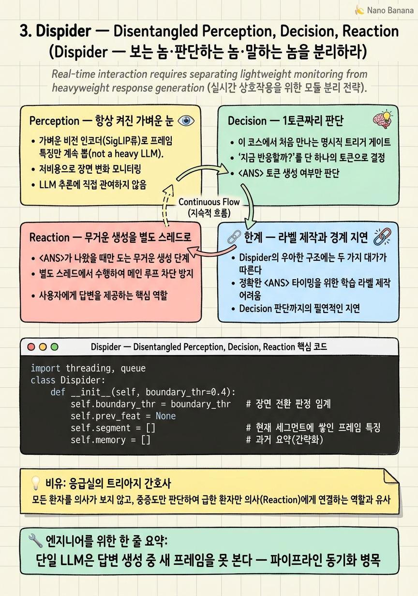

Dispider — Disentangled Perception, Decision, Reaction

🎯 학습 목표
- 단일 LLM 스트리밍의 '말하는 동안 눈 감는' 동기화 문제를 설명한다
- Perception·Decision·Reaction 세 역할의 비용 프로파일을 구분한다
- 장면 경계 기반 비균일 세그먼트가 왜 고정 분할보다 효율적인지 안다
- 1토큰 <TODO>/<ANS> 판단이 비용을 거의 없앤 원리를 설명한다
- Dispider가 이벤트 탐지기의 구조적 레퍼런스가 되는 이유를 안다
2장 DTD가 "무엇을 입력할지"를 패치 공간에서 줄였다면, Dispider(CVPR 2025)는 같은 아이디어를 시간축과 역할 구조로 확장한다. 그리고 3대 병목 중 세 번째 — 파이프라인 동기화 제약을 정면으로 공략한다.
문제 설정부터 보자. VideoLLM-Online(9장) 같은 초기 스트리밍 모델은 하나의 LLM이 프레임을 읽으며 "말할까 말까"도 판단하고, 말하기로 하면 답변 생성까지 한다. 그런데 답변을 생성하는 동안(decode는 토큰을 하나씩 뱉으니 몇 초가 걸린다) 비디오는 계속 흘러가는데 모델은 그걸 못 보고 있다. 말하는 동안 눈을 감는 셈이다. 결정적 이벤트가 하필 발화 중에 지나가면 놓친다.
Dispider의 해법은 세 역할을 별도 모듈로 쪼개고 비동기로 돌리는 것이다. 가벼운 인식은 항상 켜두고, 판단은 1토큰으로 싸게, 무거운 생성은 별도 스레드에서 드물게. 이 "싸게 감시, 드물게 생성" 철학은 10장 StreamMind(게이트를 인코더로 내림)와 StreamBridge(판단을 0.5B로 분리)로 이어지는 계보의 원형이다.
핵심 내용
Perception — 항상 켜진 가벼운 눈
첫 번째 모듈 Perception은 무거운 LLM이 아니라 가벼운 비전 인코더(SigLIP류)로 프레임 특징만 계속 뽑는다. 상시 가동되지만 비용이 낮은 이유가 여기 있다 — LLM 포워딩이 아니라 인코더 한 번이면 되니까.
여기서 핵심 트릭이 장면 기반 비균일 세그먼트(non-uniform segmentation)다. "5초마다 자르기" 같은 고정 분할 대신, 인접 프레임 특징의 유사도를 보고 장면이 바뀌는 지점에서 자른다. 정적인 구간은 하나의 긴 덩어리로 뭉개지고(토큰 절약), 변화가 많은 구간만 잘게 쪼개진다.
이것을 2장과 연결하면 명확해진다. TimeChat-Online이 패치 단위(공간)로 하던 중복 제거를, Dispider는 시간축 단위로 한다. 안 변하는 5분짜리 복도 영상은 한 세그먼트로, 사람들이 붐비는 10초는 여러 세그먼트로 — 정보량에 비례해 시간 해상도를 배분하는 것이다.
결과적으로 Perception 단계에서 이미 "정보가 없는 시간 구간"에는 연산을 아끼는 첫 번째 원리가 구현된다.
Decision — 1토큰짜리 판단
두 번째 모듈 Decision은 이 코스에서 처음 만나는 명시적 트리거 게이트다.
세그먼트가 하나 끝날 때마다 [지금까지의 메모리 + 현재 클립 특징 + 질문]을 넣고 딱 토큰 하나만 예측시킨다.
<TODO>= 아직 답할 때가 아님, 침묵하고 대기<ANS>= 지금 답해라, 반응 모듈을 깨워라
핵심은 전체 답변을 생성해보고 판단하는 게 아니라, 1토큰짜리 분류라는 점이다. Decode가 길게 돌 필요가 없으니 판단 비용이 거의 없다. 이것이 "판단은 싸게"의 구체적 구현이다.
이 설계가 곧바로 이벤트 탐지기가 된다. "이벤트 X가 발생하면 알려줘"라는 질문을 걸어두면, Decision 모듈이 매 세그먼트마다 저비용으로 감시하다가 발생 시점에만 <ANS>를 낸다. 즉 Dispider의 구조 자체가 저비용 상시 감시기다 — 이벤트 탐지를 위해 별도 시스템을 얹는 게 아니라, 질문을 바꿔 끼우기만 하면 된다.
다만 판단이 세그먼트 경계에서만 일어난다는 점을 기억하라. 이것은 뒤에서 다룰 지연의 원천이 된다.
Reaction — 무거운 생성을 별도 스레드로
세 번째 모듈 Reaction은 <ANS>가 나왔을 때만 도는 무거운 생성 단계다. 여기서 Dispider의 진짜 기여가 드러난다 — 비동기(asynchronous) 실행.
Reaction이 답변을 생성하는 동안, Perception은 멈추지 않고 계속 스트림을 관찰한다. 별도 스레드/프로세스에서 돌기 때문이다. 즉 말하면서도 눈을 뜨고 있다. 이것이 "파이프라인 동기화 제약"을 해소하는 핵심 설계다.
세 모듈의 비용 프로파일을 정리하면 이렇다.
| 모듈 | 무게 | 가동 빈도 | 역할 |
|---|---|---|---|
| Perception | 가벼움(인코더) | 항상 | 특징 추출 + 세그먼트 |
| Decision | 초경량(1토큰) | 세그먼트마다 | 침묵/응답 판단 |
| Reaction | 무거움(풀 생성) | 트리거 시에만 | 답변 생성 |
비용 절감의 논리는 결국 "무거운 연산을 얼마나 드물게 호출하느냐"로 귀결된다. 상시 도는 것은 가벼운 인코더뿐이고, LLM 생성은 이벤트 순간에만 켜진다. 평시 비용과 피크 비용을 분리해, 24시간 감시 같은 시나리오에서 평균 비용을 극적으로 낮춘다.
한계 — 라벨 제작과 경계 지연
Dispider의 우아한 구조에는 두 가지 대가가 따른다.
첫째, 학습 데이터 제작이 까다롭다. Decision 모듈을 학습시키려면 "언제 답해야 하는가"의 정확한 타임스탬프 라벨이 필요하다. 즉 "이 순간에는 <TODO>, 저 순간에는 <ANS>"라는 정답을 영상마다 만들어야 하는데, 이런 시점 라벨링은 일반적인 비디오 캡션보다 훨씬 손이 많이 간다. 9장 VideoLLM-Online이 제안한 "오프라인 라벨 → 스트리밍 대화 변환" 합성 레시피가 이 부담을 던다.
둘째, 경계 지연(boundary latency)이다. 판단이 세그먼트 경계에서만 일어나므로, 이벤트가 세그먼트 중간에 걸치면 다음 경계까지 반응이 미뤄진다. 세그먼트를 잘게 쪼개면 지연은 줄지만 판단 횟수가 늘어 비용이 오르는 트레이드오프가 생긴다.
이 지연 문제는 10장 StreamMind가 다른 방식으로 공략한다 — SSM 게이트를 프레임마다 상수 비용으로 돌려 100 FPS 판단을 달성함으로써, 세그먼트 경계라는 개념 자체를 없앤다. Dispider가 "세그먼트당 1토큰"이라면 StreamMind는 "프레임당 게이트 신호"인 셈이다.
정리하면 Dispider는 역할 분리와 비동기라는 구조적 정답을 제시했지만, 판단 주기(세그먼트)와 학습 라벨이라는 실무적 비용을 남겼다. 이 둘을 각각 개선하는 것이 이후 트리거 계열 연구의 전장이다.
💡 비유로 이해하기
붐비는 응급실을 생각하자. 만약 전문의(무거운 LLM) 한 명이 접수·진단·수술을 혼자 다 하면, 수술하는 동안(생성) 새로 실려 오는 환자(프레임)를 아무도 못 본다. 그 사이 위독한 환자가 방치될 수 있다 — 이것이 단일 LLM의 동기화 문제다.
Dispider의 응급실은 역할을 나눈다. 접수 데스크(Perception)는 항상 열려 있고, 실려 오는 환자를 계속 훑는다. 한가한 시간대는 뭉뚱그려 넘기고, 사고가 몰리는 시간대만 촘촘히 기록한다(비균일 세그먼트).
트리아지 간호사(Decision)는 환자를 볼 때마다 딱 한 번의 판정만 한다 — "대기(TODO)" 또는 "지금 의사 호출(ANS)". 진단서를 길게 쓰지 않고 초록/빨강 팔찌 하나만 채운다(1토큰). 그리고 전문의(Reaction)는 빨강 팔찌가 나올 때만 수술방으로 불려간다. 전문의가 수술하는 동안에도 접수 데스크는 계속 돌아가니, 응급실은 결코 눈을 감지 않는다.
💻 코드 예시
Dispider의 세 모듈을 개념 수준으로 엮어보자. 가벼운 perception이 장면 경계로 세그먼트를 끊고, 경계마다 1토큰 decision을 내리며,
import threading, queue
class Dispider:
def __init__(self, boundary_thr=0.4):
self.boundary_thr = boundary_thr # 장면 전환 판정 임계
self.prev_feat = None
self.segment = [] # 현재 세그먼트에 쌓인 프레임 특징
self.memory = [] # 과거 요약(간략화)
self.react_q = queue.Queue()
threading.Thread(target=self._reaction_worker, daemon=True).start()
def perceive(self, feat): # 1) 항상 켜진 가벼운 인식
"""feat: 경량 인코더가 뽑은 프레임 특징 벡터. 장면 경계면 세그먼트 종료."""
boundary = False
if self.prev_feat is not None:
dist = 1.0 - cosine(feat, self.prev_feat)
boundary = dist > self.boundary_thr # 변화 크면 경계
self.prev_feat = feat
self.segment.append(feat)
return boundary
def decide(self, query): # 2) 세그먼트당 1토큰 판단
clip = summarize(self.segment) # 세그먼트를 한 덩어리로 압축
token = one_token_head(self.memory, clip, query) # <TODO> or <ANS>
self.memory.append(clip)
self.segment = []
return token
def _reaction_worker(self): # 3) 무거운 생성 — 별도 스레드(비동기)
while True:
clip, query = self.react_q.get()
answer = heavy_llm_generate(self.memory, clip, query) # 몇 초 소요
emit(answer) # 이 동안에도 perceive()는 계속 돈다
def stream(self, feat, query="가방을 두고 떠나는 사람이 있으면 알려줘"):
if self.perceive(feat): # 경계에 도달했을 때만 판단
if self.decide(query) == "<ANS>":
self.react_q.put((summarize(self.segment), query)) # 비동기 발화
구조가 곧 비용 전략이다. perceive는 매 프레임 호출되지만 코사인 거리 계산뿐이라 싸고, 장면 경계에서만 True를 돌려준다. decide는 경계에서만 불려 one_token_head로 딱 한 토큰만 뽑는다 — 전체 답변을 생성하지 않으니 판단 비용이 거의 없다. 진짜 무거운 heavy_llm_generate는 <ANS>일 때만 react_q에 실려 별도 스레드에서 돈다. 덕분에 답변이 생성되는 몇 초 동안에도 메인 루프의 perceive는 멈추지 않는다 — 말하면서 눈을 뜨고 있는 비동기의 핵심이다. query만 바꾸면 임의의 이벤트 감시기로 변신한다는 점도 확인하라.
🏭 현업에서의 평가
✅ 시니어가 보는 것
- 생성 중 입력을 못 보는 동기화 문제를 인지하고 비동기 분리로 푸는가
- 상시/드문 연산을 분리해 평균 비용과 피크 비용을 따로 관리하는가
- 고정 분할 대신 정보량 기반 비균일 세그먼트의 이점을 설명하는가
⚠️ 레드 플래그
- 단일 모델에 판단+생성을 다 맡기고 동기화 지연을 무시함
- 세그먼트를 무조건 잘게 쪼개 비용 증가를 못 봄 (지연-비용 트레이드오프 무시)
- Decision 학습에 필요한 타임스탬프 라벨의 제작 난이도를 간과함
🎤 예상 인터뷰 질문
- 답변 생성 중에 중요한 이벤트가 지나갔다. 아키텍처를 어떻게 바꿔 놓치지 않겠는가?
- 세그먼트를 잘게/굵게 나눌 때 지연과 비용은 각각 어떻게 변하는가? 최적점은?
- Decision 모듈의 <ANS> 타이밍 라벨을 값싸게 만드는 방법은?
✨ 핵심 요약
눈 감는 문제
단일 LLM은 답변 생성 중 새 프레임을 못 본다 — 파이프라인 동기화 병목.
3역할 분리
Perception(항상)·Decision(1토큰)·Reaction(드물게)을 별도 모듈로 쪼갠다.
비동기가 핵심
Reaction을 별도 스레드로 돌려 생성 중에도 인식이 멈추지 않는다.
비균일 세그먼트
장면 경계로 잘라 정적 구간은 뭉치고 변화 구간만 쪼갠다 — 시간축 중복 제거.
1토큰 판단
<TODO>/<ANS> 한 토큰 분류로 판단 비용을 거의 없앤다.
질문만 바꾸면 감시기
이벤트 정의를 query로 걸면 구조가 그대로 저비용 이벤트 탐지기가 된다.
경계 지연·라벨 비용
세그먼트 경계에서만 판단하고 타임스탬프 라벨이 필요한 것이 대가다.